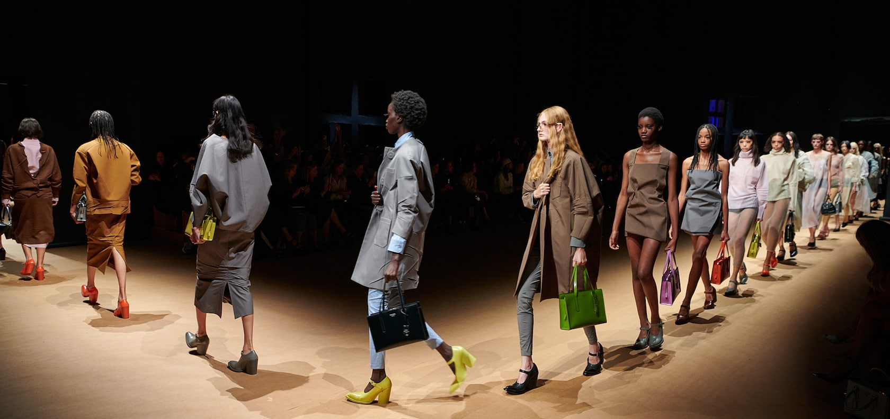

The Prada Spring/Summer 2023 women’s collection by Miuccia Prada and Raf Simons presents a sequence of realities - reflections, refractions, observations. For the women’s runway show, Prada invites the viewpoint of film director Nicolas Winding Refn to conceive an experience around the collection.
The collection plays constantly with dissimilitude and paradox, shifting between different visions, separate realities. Mirroring the décor of the show space - a black paper panopticon, itself a sublimation of a domestic sphere, a reality – a paper-based fabric is used for a series of dresses, torn against the body, intimate and impulsive. Human gestures animate surfaces - traces of life shape the forms of garments, intentional rifts, twists, creases and folds capture a spontaneity, like memories of beauty embedded in cloth.Day and evening clothes cross-pollinate, the signs and signifiers of each shifting - opera coats fuse with leather jackets, tailoring borrows trains of fabric.
Entailing an immersive installation and the runway show’s physical environs in collaboration with AMO, it is an opportunity for observation and intersection between two creative spheres, an expansion. At the center of the creative exchange sit a series of short films by NWR, exploring the lives of women, the scope of fluid modern femininity - a subject matter that has always fascinated Prada. These films are presented physically to the audience within the installation at the Deposito of the Fondazione Prada. Through raw apertures punched through the décor, fragments of NWR’s shorts may be observed, the audience inside afforded the opportunity to look out, to more realities.
We saw two sides of the Prada woman—the domesticated, private persona; and the outward-facing one. Blazer suiting that mimicked co-creative director Raf Simon’s ubiquitous bomber jacket in bulky shapes, coats with strong lines which models clasped together (as Miuccia herself often does), and leather suiting with angular backs and severe skirts represented the public-facing persona. The monochromatic onesies, sheer gowns with lace trimming, and sheer lurex knits represented the private life—hiding in the shadows as if in one of Refn’s films.
Purely pragmatic Prada-isms could be found throughout the collection, which felt intrinsically more intellectual than past seasons where Simons served as co-creative director. The immersive idea of hard and soft–of women as heroines, villains, doll-like figures, damsels in distress, and victims of voyeurism—came to life through tailoring that looked severe in the front and baggy in the back; raw black dresses whose undone hems may unravel any second; sheer silks and gauzy turtlenecks, piles of gossamer-like fabric and doll negligées layered over suiting. The primitive rawness of fabrics also recalled Prada’s spring 2009 collection in many ways.
Prada is an Italian fashion firm, founded by Mario Prada in 1913 as Fratelli Prada, the firm took a radical turn with the arrival of Miuccia Prada , the founder's granddaughter, in 1978 . Under Miuccia's direction, what was a local fur and leather business became in a few years an international fashion firm. Prada 's first prêt-à-porter collection was presented in the fall-winter season of 1989 .
The brand is mentioned in the following movies:
Series:
18779977232 | INSTAGRAM: @prada
Made by Micaela Vacherand
© PRADA 2007 - 2022 | VAT n. 10115350158